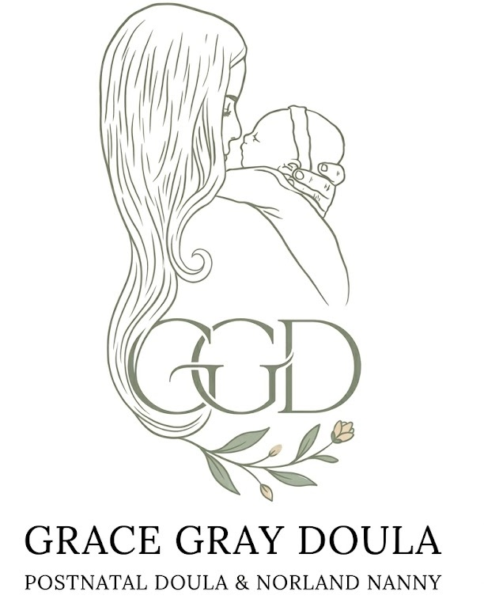
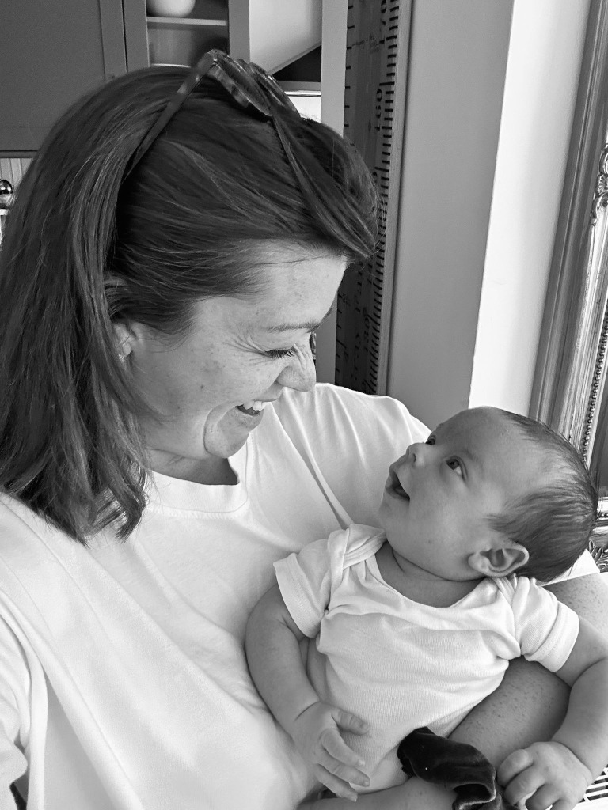
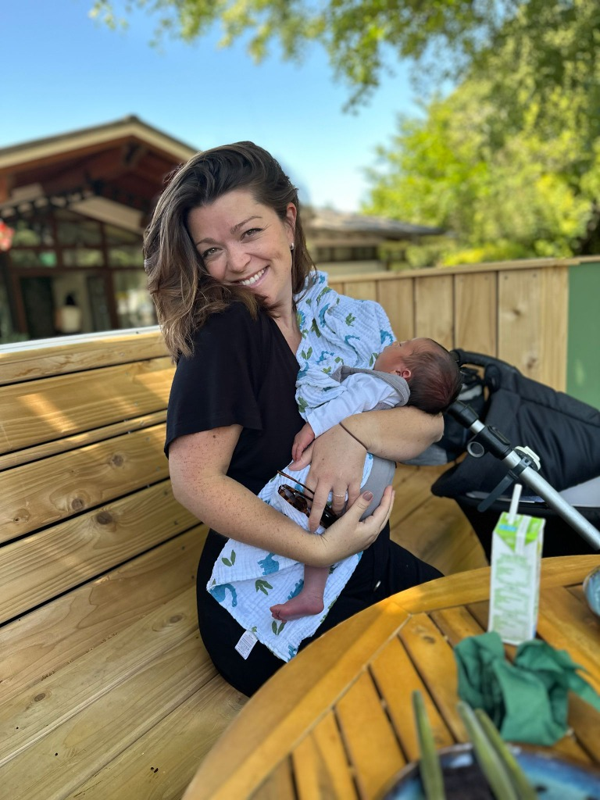

Every birth is different, making preparation and compassionate postnatal care vitally important. Whether you are navigating the early days with a newborn or healing from a traumatic birth experience, my goal is to provide the expert support you need to find your footing and step into motherhood with a positive outlook.
Matrescence � the profound psychological and physical process of becoming a mother � is beautiful. But it can also be overwhelming. When you bring a new baby home, dividing your attention between them and your older children can feel like an impossible juggle.
You may be recovering from a birth that didn't go to plan. You may be exhausted, emotional, and trying to hold it all together. You don't have to do this alone.
About Me
Expert care for your newborn, giving you the space to be fully present with your older children - reassuring them of their vital place in the family.
Engaging, interactive activities with your older children so you can enjoy completely guilt-free, uninterrupted bonding time with your new baby.
Birth trauma support, antenatal preparation, and full-family integration - helping your family find its new rhythm together.
"Birth and Matrescence can throw all sorts of curve balls your way, the one thing you should be able to depend on is reliable, compassionate care."� GRACE GRAY
Just because you are having a caesarean does not mean your birth is out of your control. C-section preparation is a vital part of the process - understanding what to expect, how to advocate for yourself, and how to create a calm, positive environment can transform your experience. I help mothers prepare physically and emotionally so that they feel informed, empowered, and held throughout every stage of their birth.
Learn MoreSix weeks is not the finish line. For so many mothers, the hardest days do not arrive in those early, well-supported weeks - they come later, quietly, once the visitors have stopped calling and the world expects you to have it all figured out. The truth is, there is no expiry date on needing support. Whether your baby is six weeks, six months, or well beyond their first birthday - if you are struggling, exhausted, or simply feel like you need someone in your corner, that is more than enough reason to reach out.
You do not need to wait for a crisis. You do not need to justify how you are feeling. Wherever you are on your journey, I am here - and the door is always open.
Get in Touch
I am a mother of three. Having three babies in four years, and navigating an unexpected medical diagnosis of bilateral talipes with my eldest, gave me a profound, lived understanding of the hospital system and the fears of a new mother when birth doesn't go to plan.
As a Norland Nanny awarded the prestigious Principal Award - the highest-standing student of my year - I bring the global gold standard of childcare directly into your home.
Get in touch to discuss your needs and find out how I can support you during your most important days.
Start the Conversation